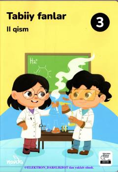

TF3-sinf o'quvchilari uchun tabiat hodisalari va tabiiy boyliklar haqida darslik.
Ushbu darslik umumiy o'rta ta'lim maktablarining 3-sinf o'quvchilari uchun mo'ljallangan bo'lib, tabiat hodisalari, tabiiy boyliklar, suv resurslari, moddalar va ularning turlari haqida ma'lumot beradi. Kitob o'quvchilarning tabiat haqidagi bilimlarini kengaytirish va ularda ilmiy dunyoqarashni shakllantirishga xizmat qiladi.